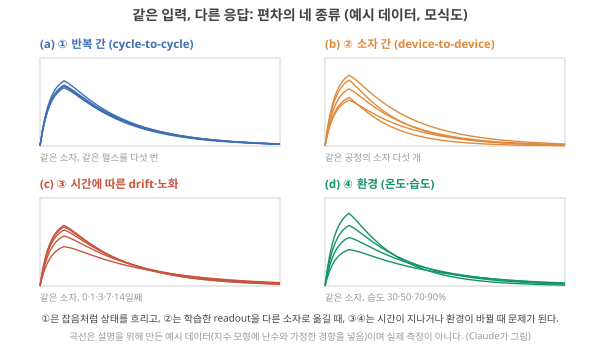
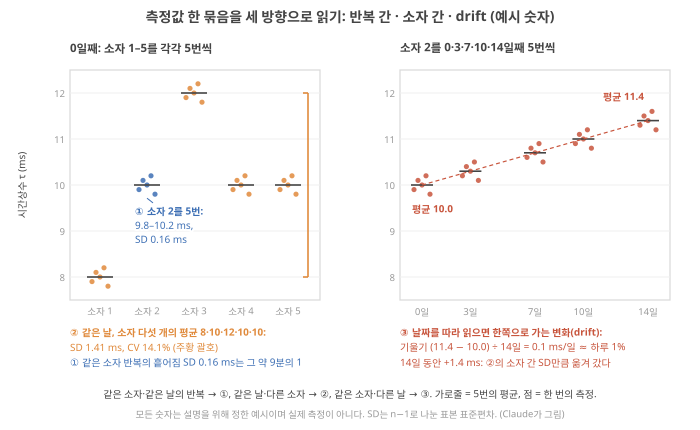
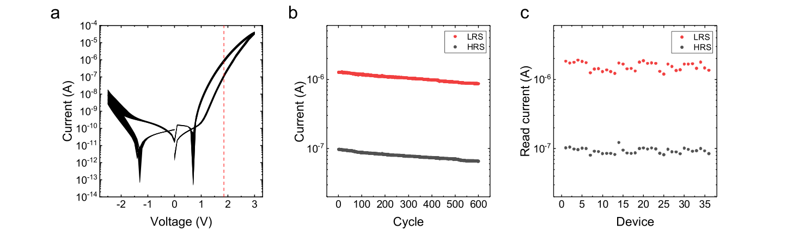
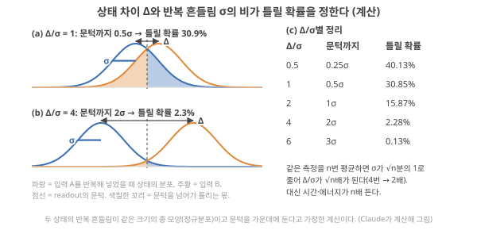
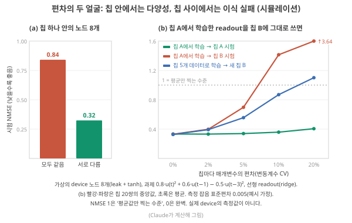
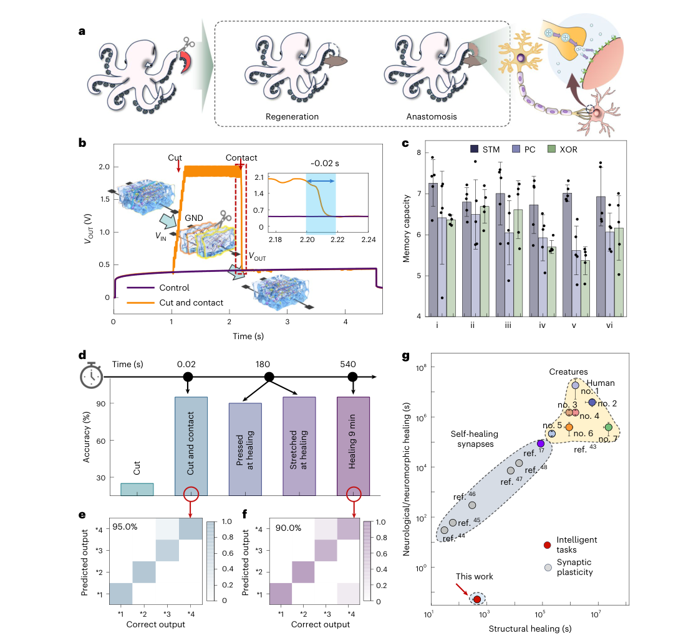
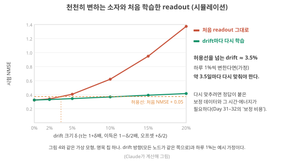
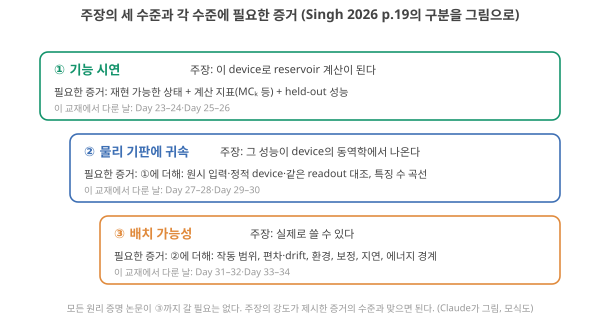
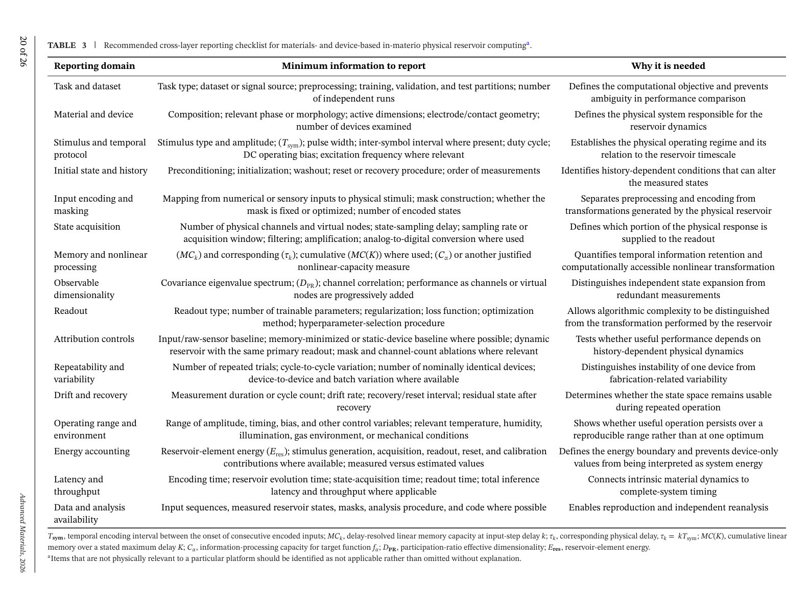
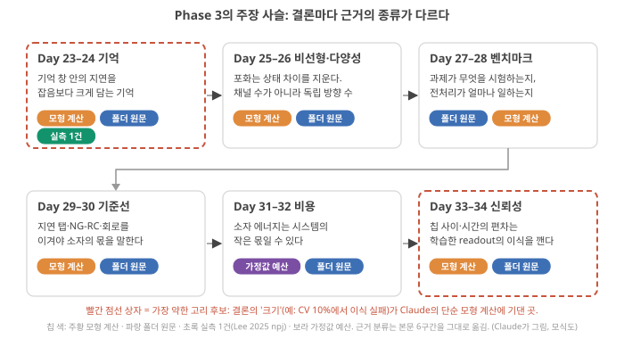

Day 32. 재현성과 신뢰성, Phase 3 종합
Phase 3 · 좋은 시스템이란 무엇인가
이번 질문 — 재현성과 신뢰성은 어떻게 확보하는가? 소자 편차·잡음·장기 안정성은 어디까지 허용되는가?
배울 핵심 — 편차의 네 종류와 SD·CV·drift 기울기, 상태 차이 대 반복 흔들림(Δ/σ), 칩 안 다양성 대 칩 사이 readout 이식 실패, 재보정 주기 = 허용 drift ÷ drift 속도
이후 쓰이는 곳 — Day 41–42 논문 평가 체크리스트(증거의 세 수준), Day 43–44 연성 이온 소재의 안정성 병목, Day 45–46 몸 안 장치의 보정 절차, Day 47–48 drift 가설과 최소 검증 실험
지난 학습 복습
지난 학습 단위(Day 31 · 지연시간과 같은 경계에서 비교하기)의 핵심을 다른 예로 확인합니다. 고르는 즉시 맞았는지와 이유가 보입니다. 틀려도 아래 학습자료는 그대로 열려 있고, 틀린 문제에는 다시 볼 곳이 붙습니다.
사전 테스트 (선택)
사전 테스트 펼치기 · 배우기 전에 짐작해 보는 문제 (선택)
학습자료
Phase 3의 마지막 Day입니다. Day 22–23부터 Day 30–31까지 "좋은 RC 소자"를 재는 잣대를 하나씩 세웠습니다(RC: 고정된 물리계인 reservoir가 입력을 상태로 바꾸고, 상태에 가중치를 곱해 더하는 마지막 층인 readout만 학습하는 reservoir computing, Day 11–12). 기억은 과제의 시간척도에 맞아야 하고(Day 22–23), 큰 응답보다 구별되는 상태가 중요하며(Day 24–25), 벤치마크 점수는 무엇을 시험했는지와 함께 읽어야 하고(Day 26–27), 기준선(소자를 빼고 같은 일을 시킨 비교 대상) 없이는 숫자의 크기를 모르며(Day 28 기초), 소자의 에너지와 시스템의 비용은 다르다(Day 30–31). 이번에는 마지막 잣대를 세웁니다. 같은 결과가 다시 나오는가. 다음 날 다시 재도, 옆 소자로 바꿔도, 습도가 바뀌어도. 그리고 이 여섯 잣대를 논문 한 편에 대 볼 수 있는 평가 체크리스트 한 장으로 묶어 Phase 3을 마칩니다. 이 체크리스트는 Day 41–42에서 폴더 논문들을 평가할 때 그대로 씁니다.
- 같은 입력에 다른 응답이 나오는 경우는 몇 가지이고, 각각 어떻게 재나?
- 잡음(반복 흔들림)은 언제 치명적이고, 언제 견딜 만한가?
- RC에서 소자 편차는 정말 무해한가? 어디서 도움이 되고 어디서 문제가 되나?
- 시간이 지나며 소자가 변하면(drift) 얼마나 자주 다시 맞춰야 하나? 이온 소자에 특히 무엇이 문제인가?
- Phase 3 전체를 논문 평가 체크리스트 한 장으로 묶으면?
- Phase 3의 답을 한 단락으로 잇고, 가장 약한 고리와 바뀐 가정을 적으려면?
1. 같은 입력, 다른 응답: 편차의 네 종류와 재는 법
이 구간을 읽고 나면 반복 간·소자 간·시간(drift)·환경에 따른 편차를 구별하고, 각각을 어떤 실험으로 재며 어떤 숫자(평균, 표준편차, 변동계수, drift 속도)로 보고하는지 작은 숫자로 계산할 수 있다.
실험실에서 흔한 장면입니다. 지난주에 잘 나오던 곡선이 이번 주에는 조금 다르고, 옆 칩의 소자는 또 다릅니다. 이 차이를 한 단어 "편차"로 부르면 해결책도 하나로 뭉뚱그려집니다. 그러나 원인이 다르면 RC에 주는 피해도, 고치는 방법도 다릅니다. 먼저 종류를 가릅니다.
소자 편차·잡음·장기 안정성과 그 측정
① 왜 필요한가. RC는 readout을 한 번 학습해 두고 계속 쓰는 방식입니다(Day 10 기초 3: readout). 학습할 때의 상태와 쓸 때의 상태가 달라지면, 학습한 가중치(readout이 상태 숫자마다 곱하는 수)가 엉뚱한 답을 냅니다. 그래서 "상태가 얼마나, 왜, 언제 달라지는가"를 재는 것이 성능 숫자만큼 중요합니다.
② 네 종류 — 그림부터. 그림 1은 같은 펄스를 넣었을 때의 응답 곡선(가로 = 시간, 세로 = 응답)을 네 상황으로 나눈 것입니다. 칸마다 아래 회색 글씨에서 무엇이 같고 무엇이 바뀌었는지를 먼저 읽고, 곡선 다섯 개가 얼마나 겹치는지 비교하세요.

네 칸을 표로 정리하면 다음과 같습니다. 오른쪽 열의 readout 이야기는 3·4구간에서 숫자로 확인합니다.
| 종류 | 같은 것 / 바뀌는 것 | 재는 실험 | RC에서의 피해 |
|---|---|---|---|
| ① 반복 간(cycle-to-cycle) | 같은 소자, 같은 입력 / 반복 횟수 | 같은 입력열을 여러 번 넣고 상태 궤적을 비교 | 상태가 흐려진다(잡음처럼) |
| ② 소자 간(device-to-device) | 같은 공정·설계 / 소자 | 명목상 같은 소자 여럿에 같은 입력열 | 한 소자에서 학습한 readout을 다른 소자에 못 쓴다 |
| ③ drift·노화 | 같은 소자 / 시간·사용 횟수 | 기저선(입력을 주지 않을 때 소자가 머무는 값. Day 28–29의 '기준선', 즉 비교 대상과는 다른 말)이나 정해 둔 상태를 시간·사이클에 따라 추적, 입력 뒤 원래로 돌아오는지(회복) 확인 | 며칠 전에 학습한 readout이 지금은 틀린다 |
| ④ 환경 | 같은 소자 / 온도·습도·빛·기체 | 환경을 바꿔 가며 같은 측정 | 환경이 바뀌면 다른 소자가 된다 |
Singh 2026은 편차를 물리적 기원에 따라 보고하라고 씁니다. "같은 소자의 반복 측정은 반복 간 편차를, 명목상 같은 소자들의 측정은 소자 간 편차를, 더 긴 기간의 반복 측정은 노화나 날마다의 변화를 보여 준다." 그리고 환경 변수가 기작에 영향을 주면 함께 적으라고 합니다. Singh 2026, p.14
③ 순서. 같은 글은 측정 순서도 정해 둡니다. 가장 먼저 "같은 입력에 대한 응답이 반복 가능한지, 측정 시간 동안 느린 drift가 있는지, 한 소자 안의 편차가 소자들 사이의 편차보다 작은지"를 확인하라는 것입니다. 이유는 "drift가 기억인 척할 수 있고, 겉보기 동작점을 옮기며, 학습 가능성과 재보정을 해치기 때문"입니다. Singh 2026, p.5 기억인 척한다는 것은 이런 뜻입니다. 펄스를 받을 때마다 소자가 한쪽으로 조금씩 밀려 가면, 그 변화는 "과거 입력을 기억한 흔적"처럼 보입니다. 그러나 입력의 내용과 상관없이 시간·사용 횟수에 따라 쌓인 변화라면 다음 입력열에서 같은 상태로 재현되지 않습니다(구별하는 실험은 아래 회복 잔차와 4구간). 동작점은 입력이 들어오기 전 소자가 머물러 있는 기준 상태로, 응답은 이 점에서 출발합니다. 이것이 옮겨 가면 같은 입력도 다른 상태로 끝납니다. 기억(Day 22–23)이나 비선형(Day 24–25)을 최적화하는 것은 그다음입니다. 왜 "소자 안 편차 < 소자 사이 편차"를 따지나: 같은 소자를 반복해 잴 때의 흔들림이 소자끼리의 차이만큼 크면, "소자마다 다르다"는 측정 자체가 잡음에 묻혀 믿을 수 없기 때문입니다. 아래 ④의 숫자로 이 비교를 직접 해 봅니다.
④ 작은 숫자로 — 측정값 한 묶음을 세 방향으로 읽기. 명목상 같은 소자 다섯 개를 만들어 시간상수 τ(펄스 뒤 응답이 원래로 돌아가는 시간의 척도, Day 22 1구간)를 잰다고 합시다. 소자마다 같은 펄스를 5번씩 넣어 재고, 그중 소자 2는 14일 동안 며칠마다 다시 5번씩 잽니다. 숫자는 한 표에 쌓이는데, 어느 방향으로 읽느냐가 편차의 종류를 정합니다(그림 2). 흩어짐의 크기는 표준편차(standard deviation, SD: 측정값이 평균에서 벗어나는 전형적인 크기, Day 22 기초)로 적습니다. 그림에 적힌 SD 값은 아래 단계 1–3에서 직접 계산하니, 지금은 점들이 모인 폭만 비교하세요.

- 같은 소자·같은 날의 5번(소자 2: 9.9, 10.1, 10.0, 10.2, 9.8 ms) → ① 반복 간
- 같은 날·다른 소자의 평균(8, 10, 12, 10, 10 ms) → ② 소자 간
- 같은 소자·다른 날의 평균(10.0 → 10.3 → 10.7 → 11.0 → 11.4 ms) → ③ drift
먼저 ② 소자 간 흩어짐을 숫자 하나로 적어 봅니다. 분산·표준편차의 계산은 Day 22 기초에서 배운 그대로입니다.
단계 1 — 평균. \((8 + 10 + 12 + 10 + 10)/5 = 10\) ms.
단계 2 — 벗어난 양의 제곱. 평균에서 벗어난 양은 −2, 0, 2, 0, 0. 제곱하면 4, 0, 4, 0, 0이고 합은 8입니다.
단계 3 — 표본 분산과 표본 표준편차. 제곱의 합 8을 개수 − 1 = 4로 나눈 2가 표본 분산이고, 그 제곱근 \(\sqrt{2} = 1.41\) ms가 표본 표준편차(standard deviation, SD)입니다. 흩어짐의 전형적 크기이고 단위는 τ와 같은 ms입니다. 왜 5가 아니라 4로 나누나: 다섯 개는 "이 방법으로 만든 소자 전체"에서 뽑은 표본이고, 평균 10도 바로 이 다섯 숫자에 맞춰 계산했기 때문에 5로 나누면 흩어짐을 조금 작게 어림합니다. 그래서 이 교재는 측정값을 "평균 ± 표준편차"로 보고할 때 \(n-1\)로 나눕니다(Day 22 기초의 규칙). 5로 나누면 \(\sqrt{8/5} = 1.26\) ms가 되므로 어느 쪽을 썼는지 적습니다(스프레드시트의 STDEV.S가 \(n-1\), STDEV.P가 \(n\). Day 48에서 쓰는 \(s\)도 \(n-1\)).
단계 4 — 변동계수(coefficient of variation, CV). 표준편차 ÷ 평균 = 1.41/10 = 0.141, 즉 14.1%. 왜 평균으로 나누나: τ가 18, 20, 22, 20, 20 ms인 소자 묶음도 표준편차는 똑같이 1.41 ms지만 평균이 두 배라, 상대적으로는 절반만 흩어져 있습니다(CV 7.1%). CV는 단위가 없어 τ든 전류든 이득이든 같은 잣대로 비교할 수 있습니다.
단계 5 — 나머지 두 방향. ① 소자 2의 5번(9.9, 10.1, 10.0, 10.2, 9.8): 평균 10.0, 벗어난 양의 제곱 합 0.10, ÷ 4 = 0.025, 표준편차 0.16 ms(CV 1.6%). ③ 날짜별 평균은 흩어진 것이 아니라 한쪽으로 늘어나므로 표준편차가 아니라 기울기로 적습니다: (11.4 − 10.0) ÷ 14일 = 0.1 ms/일, 처음 값의 하루 1%.
세 숫자를 나란히 놓으면 ③의 순서 점검이 됩니다. 소자 안의 반복 흔들림(0.16 ms)이 소자 사이 흩어짐(1.41 ms)의 약 9분의 1이므로, "소자 1은 8 ms, 소자 3은 12 ms"라는 차이는 측정 잡음이 아니라 진짜 소자 차이입니다. 그리고 소자 2는 14일 동안 1.4 ms, 즉 소자 간 표준편차만큼 옮겨 갔습니다. 두 주 뒤의 소자 2는 readout 입장에서 사실상 다른 소자입니다(4구간에서 이것이 성능에 주는 영향을 계산합니다).
drift 속도는 "단위 시간(또는 사이클)당 얼마나 변하나"입니다. 예: 기저 전도도가 1시간에 0.5%씩 내려가면, 변화가 직선으로 쌓인다고 볼 때 하루 뒤 12% 내려가 있습니다. 회복 잔차는 입력열이 끝나고 정해 둔 시간을 기다린 뒤에도 남아 있는 처음 상태와의 차이입니다. 예: 입력 전 기저 전도도가 100(임의 단위)이고, 입력열이 끝나고 10분 뒤 103이면 회복 잔차는 3%입니다. 잔차가 0으로 돌아가지 않고 입력열마다 쌓이면 drift입니다. Singh 2026의 설계 규칙 표는 이런 지표로 "단위 시간·사이클당 drift, 회복 잔차, 반복 상태 오차, 반복 간·소자 간 편차"를 듭니다. Singh 2026, p.10, Table 1
⑤ 이름과 정확한 뜻. 이 교재에서 재현성은 "같은 조건에서 같은 상태가 다시 나오는 정도"(①·②), 안정성은 "시간·환경이 바뀌어도 상태가 유지되는 정도"(③·④), 신뢰성은 둘을 합쳐 "학습한 readout이 쓰는 기간 동안 맞는 답을 내는가"로 씁니다. 문헌마다 쓰임이 조금씩 다르므로, 논문을 읽을 때는 어떤 실험으로 쟀는지를 봅니다.
같은 낱말, 다른 뜻 — drift. 이 Day의 drift(장기 drift)는 "소자의 성질이 시간·사용에 따라 천천히 한쪽으로 변하는 것", 곧 측정값의 느린 변화입니다. Day 33–34에서 배우는 드리프트(drift)는 "전기장에 끌려 이온·전자가 한 방향으로 움직이는 운동", 곧 입자의 움직임입니다(Day 33 기초). 이온이 전기장에 끌려 조금씩 자리를 옮긴 결과가 소자의 느린 변화로 나타나는 것처럼 둘이 이어질 수는 있지만 해석, 같은 개념이 아닙니다. 헷갈리면 "장기 drift", "이온 드리프트"로 구별해 적습니다.
⑥ 이온·RC와의 연결. CIM(메모리 배열 안에서 곱해 더하기, Day 3–4) 쪽 리뷰인 Jiang 2026은 성능 지표(동작 전압, on/off 비(켜진 상태와 꺼진 상태의 전류 비), 선형성(linearity: 전도도가 쓰기 펄스나 입력에 비례해 변하는 정도. 읽기 I–V의 선형성과 쓰기 갱신의 선형성은 다른 양))와 별도로 "전도도 drift 또는 이완, 소자 간 편차, endurance(몇 번 쓰고 지울 수 있나), 수율"을 신뢰성 지표로 묶고, 이것들이 계산 오차의 중요한 원천이라고 씁니다. Jiang 2026, p.1111 RC 소자도 같은 지표가 필요하지만, 다음 구간에서 보듯 편차의 의미가 다릅니다.
⑦ 짧은 확인. 이득이 0.9, 1.1, 1.0, 1.0인 소자 넷의 CV는? (평균 1.0, 벗어난 양의 제곱 0.01, 0.01, 0, 0 → 합 0.02 → 개수 − 1 = 3으로 나눠 0.0067 → 표본 표준편차 0.082 → CV 8.2%. 아래 점검에서 다시 풉니다.)
폴더 논문이 실제로 무엇을 보고하는지 하나 봅시다. Lee 2025(npj)는 HfO₂ 2단자 소자의 I–V 곡선을 600번 연속으로 그려 반복 간 편차가 작음을 보이고, 소자 36개의 고저항·저저항 상태(HRS·LRS: 이 소자가 0과 1처럼 기억하는 두 저항 상태) 전류로 소자 간 균일성을 보입니다. Lee 2025 (npj), p.2–3 이것은 직류(DC) 특성의 재현성입니다. RC가 쓰는 것은 펄스열에 대한 동적 응답(감쇠 시간, 펄스마다의 변화)이므로, DC가 균일하다고 τ도 균일하다는 보장은 없습니다. 해석 같은 논문의 N-MNIST(사건 카메라로 찍은 손글씨 숫자, Day 27 4구간) 결과는 "다섯 번의 독립 측정 평균"이라고 적혀 있어 반복 간 편차를 평균으로 다룬 것이 보입니다. Lee 2025 (npj), p.7
원문 그림을 읽기 전에. 아래 세 칸은 네 종류 편차 중 ①·②를 한 논문이 어떻게 보이는지의 예입니다. 가로축이 무엇인지(전압, 사이클 번호, 소자 번호)부터 확인하세요.

- 반복 간 / 소자 간 편차
- 같은 소자의 반복 측정 사이 차이 / 명목상 같은 소자들 사이의 차이. 영어로 cycle-to-cycle(C2C) / device-to-device(D2D).
- drift / 노화
- 시간이나 사용 횟수에 따라 상태가 한쪽으로 천천히 변하는 것. 기억인 척할 수 있다. 흩어짐이 아니라 기울기(단위 시간당 변화)로 적는다. Day 33–34의 이온 '드리프트'(전기장 속 이동)와 다른 뜻.
- 기저선
- 입력을 주지 않을 때 소자가 머무는 값. 비교 대상인 '기준선'(Day 28–29)과 다르다.
- 회복 잔차
- 입력이 끝나고 정한 시간이 지난 뒤에도 남은 처음 상태와의 차이.
- 변동계수 (CV)
- 표준편차 ÷ 평균. 단위 없는 상대 흩어짐. 표본 표준편차(n−1로 나눔)를 썼는지 적는다.
여기까지: 그림 2의 측정값 한 묶음을 같은 소자 반복(①)·같은 날 다른 소자(②)·같은 소자 다른 날(③)로 읽어 SD·CV·drift 기울기를 계산하고, DC 특성의 균일성과 펄스 응답의 균일성을 구별할 수 있다. 다음: 반복 흔들림이 readout에 언제 치명적인지.
- 편차는 반복 간·소자 간·drift·환경 네 종류로 가르고, 기원에 따라 따로 보고한다 Singh 2026, p.14.
- 순서: 반복성·drift·(소자 안 < 소자 사이)를 먼저 확인한다. drift는 기억인 척한다 Singh 2026, p.5.
- 측정값 한 묶음을 같은 소자 반복(①)·같은 날 다른 소자(②)·같은 소자 다른 날(③)로 읽는다. 예: 소자 2 반복 SD 0.16 ms, 소자 간 SD 1.41 ms(약 9배), drift 0.1 ms/일.
- 숫자: τ = 8, 10, 12, 10, 10 ms → 평균 10. 표본 표준편차(n−1로 나눔, 기본) 1.41, CV 14.1%. 개수 n으로 나누면 1.26, CV 12.6%.
- DC 특성의 균일성 ≠ 동적 응답의 균일성 해석.
2. 잡음은 언제 치명적인가: 상태 차이 대 반복 흔들림
이 구간을 읽고 나면 "readout이 쓰는 상태 차이 Δ"와 "반복 흔들림 σ"의 비로 잡음의 피해를 계산하고, 평균을 내면 무엇을 얻고 무엇을 잃는지 말할 수 있다.
잡음이 있다는 것만으로는 아무것도 결정되지 않습니다. 중요한 것은 잡음이 무엇에 비해 큰가입니다. Day 24–25에서 readout이 두 입력을 구별하려면 그 둘이 서로 다른 상태로 끝나야 한다고 했습니다(Day 24 기초: 분리). 이번에는 거기에 반복 흔들림을 더합니다.
입력 A를 여러 번 넣으면 상태가 한 값이 아니라 흩어진 구름으로 나옵니다. 입력 B도 마찬가지입니다. 여기서는 단순하게 readout이 보는 값을 숫자 하나(상태 숫자 하나, 또는 readout의 출력)로 놓습니다. 두 구름의 중심이 떨어진 거리 Δ(델타)는 readout이 읽어 내야 할 신호이고, 각 구름의 퍼짐 σ(시그마. 같은 입력을 반복할 때의 표준편차, 즉 1구간의 반복 간 편차)는 잡음입니다. 그래서 Δ/σ는 "신호가 잡음의 몇 배인가", 곧 신호 대 잡음비(signal-to-noise ratio, SNR)의 한 형태입니다. Day 24–25에서 "분리는 거리 ÷ 잡음으로 읽는다"고 한 그 비입니다. readout이 두 중심의 한가운데에 문턱을 긋고 A와 B를 가를 때 틀리는 비율은 Δ/σ 하나로 정해집니다(흩어짐이 같은 폭의 종 모양, 즉 정규분포일 때). 그림 3이 Δ/σ = 1과 4를 비교합니다. 무엇을 볼지: 두 종 모양이 문턱(가운데 세로선)을 넘어 겹치는 넓이(색칠한 꼬리)가 틀리는 몫입니다. 위(Δ/σ = 1)와 아래(4)에서 그 넓이를 비교하세요.

작은 예로 따라가기 — 언제 구별되나.
단계 1 — 신호와 잡음을 잰다. 입력 A를 20번 넣었더니 readout 출력의 평균이 1.00, 입력 B는 1.20이었습니다. Δ = 0.20. 같은 입력을 반복할 때 출력의 표준편차는 σ = 0.05. 그러면 Δ/σ = 0.20 ÷ 0.05 = 4, 신호가 잡음의 4배입니다.
단계 2 — 문턱을 긋는다. 두 평균의 한가운데인 1.10에 문턱을 둡니다. 출력이 1.10보다 작으면 "A", 크면 "B"라고 답합니다.
단계 3 — 틀리는 경우를 σ 단위로 잰다. A를 넣었는데 "B"라고 답하려면 출력이 1.10을 넘어야 합니다. A의 평균에서 +0.10, 즉 Δ/2 = σ의 2배 넘게 위로 벗어나야 합니다. 종 모양(정규분포)에서 한쪽으로 σ의 2배 넘게 벗어날 확률은 약 2.3%입니다(1배면 15.9%, 0.5배면 30.9%, 3배면 0.13%. 정규분포 표의 값 Claude가 계산으로 확인). B도 대칭이라 전체 틀릴 확률은 2.3%입니다. 일반 규칙: 문턱까지의 거리는 σ의 (Δ/σ)/2배이고, 그만큼 벗어날 확률이 틀릴 확률입니다(아래 표).
단계 4 — 잡음이 4배라면. Δ는 그대로 0.20인데 σ = 0.20이면 Δ/σ = 1, 문턱까지 0.5σ라 30.9%, 세 번에 한 번꼴로 틀립니다. 상태 차이는 그대로인데 잡음 때문에 readout이 쓸모없어진 것입니다. 고치는 길은 Δ를 키우거나(입력 부호화, 소자 선택) σ를 줄이는 것(반복해 평균, 아래)입니다.
| Δ/σ | 0.5 | 1 | 2 | 4 | 6 |
|---|---|---|---|---|---|
| 문턱까지 | 0.25σ | 0.5σ | 1σ | 2σ | 3σ |
| 틀릴 확률 | 40.1% | 30.9% | 15.9% | 2.3% | 0.13% |
논문의 SNR과 헷갈리지 않기. 회로·통신에서 SNR은 보통 전력의 비로 적으므로 진폭 비의 제곱(Δ²/σ²에 해당)이고, 데시벨(dB)로도 씁니다. 논문의 "SNR 20 dB"는 전력 100배, 진폭 10배라는 뜻이라 Δ/σ = 20으로 읽으면 안 됩니다(진폭 비로는 Δ/σ = 10에 해당). 통계의 신호 검출 이론에서는 Δ/σ와 같은 양(두 분포의 평균 차 ÷ 공통 표준편차)을 d′(디프라임)이라 부릅니다. 확인 공개 정리 Wikipedia "Signal-to-noise ratio", Wikipedia "Sensitivity index"와 대조(2026-10-25 열람). 폴더 논문의 내용은 아님
Singh 2026의 설계 규칙 표는 "재현 가능한 요동"이 깨졌다는 신호로 "명목상 같은 입력이 상당히 다른 상태 궤적을 만들고, 기저선이 점점 바뀌며, 요동이 readout이 쓰는 상태 차이와 비슷하거나 더 커지는 것"을 듭니다. Singh 2026, p.9, Table 1 마지막 항목이 정확히 "Δ/σ가 1 안팎이거나 그보다 작은" 상황입니다.
평균은 공짜가 아니다. 같은 측정을 \(n\)번 반복해 평균하면 흔들림은 \(\sigma/\sqrt{n}\)로 줄어듭니다(서로 무관한 흔들림일 때). 이유: 무관한 흔들림 \(n\)개를 더하면 분산이 \(n\)배(\(n\sigma^2\))가 되고(Day 22 기초), 합을 \(n\)으로 나누면 분산은 \(n^2\)분의 1이 되어 \(\sigma^2/n\), 표준편차는 \(\sigma/\sqrt{n}\)입니다. 4번 평균하면 σ가 절반, Δ/σ가 2배가 되어 15.9% → 2.3%. 그러나 시간과 에너지는 \(n\)배 듭니다. Day 30–31에서 본 대로 느린 이온 소자에서는 측정 한 번이 이미 길고, 시스템의 대기 전력이 그 시간만큼 쌓입니다(Day 30 기초: 시스템 비용). 그래서 "평균 다섯 번으로 정확도를 얻었다"는 결과는 "추론(학습을 마친 시스템이 새 입력에 답을 내는 일) 한 번에 측정 다섯 번의 시간·에너지가 든다"와 함께 읽어야 합니다. 해석
평균이 줄이는 것은 반복 간 흔들림(①)뿐입니다. 그림 2의 소자 2를 14일째에 다섯 번 재서 평균하면 11.4 ms를 ±0.07 ms(\(0.16/\sqrt{5}\))로 정밀하게 얻지만, 그 값은 0일째의 10.0 ms에서 옮겨 간 값입니다. drift(③)와 소자 간 차이(②)는 매번 같은 쪽으로 치우친 차이라 같은 소자를 반복해 평균해도 줄지 않습니다.
심화 · 두 평균의 차이가 '진짜 변화'인지 가리기(차이의 흔들림은 √2배)
그림 2의 소자 2가 0일째 10.0 ms, 3일째 10.3 ms였습니다. "변했다"고 말할 수 있을까요? 날마다 5번 평균했으므로 평균 하나의 흔들림은 \(0.16/\sqrt{5} \approx 0.07\) ms이고, 두 평균의 차이의 흔들림은 그 \(\sqrt{2}\)배인 약 0.10 ms입니다(무관한 흔들림 둘의 분산이 더해지므로). 차이 0.3 ms는 그 3배이고, 14일째의 1.4 ms는 14배라 확실한 변화(drift)입니다. 반면 한 번씩만 잰 두 값이라면 차이의 흔들림이 약 0.22 ms(\(0.16 \times \sqrt{2}\))라 0.3 ms 차이는 1.3배 정도뿐이어서 우연과 잘 구별되지 않습니다. 같은 잣대로 소자 1(8 ms)과 소자 3(12 ms)의 차이 4 ms는 반복 흔들림보다 압도적으로 커서 진짜 소자 차이입니다. 차이가 "구별된다"는 말은 언제나 그 차이 ÷ 그 차이의 흔들림이 충분히 큰가를 묻는 것입니다. [해석: 흔들림이 서로 무관하고 종 모양이라는 가정]
잡음이 도움이 되는 경우는? 문헌에는 잡음·요동이 상태를 풍부하게 한다는 주장도 있습니다. Singh 2026은 확률적 요동(stochasticity)이 "학습 가능성이나 재현성을 해치지 않으면서 상태 공간을 넓힐 때에만" 가치가 있다고 씁니다. Singh 2026, p.5 같은 입력에 매번 다른 답을 내는 요동은 readout 입장에서 정보가 아니라 잡음입니다. 해석
여기까지: Δ/σ로 문턱까지의 거리를 σ 단위로 바꿔 틀릴 확률을 어림하고(그림 3), 평균 n번이 반복 흔들림만 √n분의 1로 줄이며 시간·에너지를 n배 쓴다는 것을 말할 수 있다. 다음: 소자 편차가 칩 안과 칩 사이에서 하는 정반대의 일.
- 잡음의 피해는 Δ/σ(readout이 쓰는 상태 차이 ÷ 반복 흔들림, 진폭으로 잰 신호 대 잡음비)로 정해진다. 문턱까지의 거리 Δ/2가 σ의 몇 배인지를 보면 된다. Δ/σ = 1이면 30.9%, 4면 2.3% 틀린다(정규분포 가정).
- 요동이 상태 차이와 비슷해지면 재현 가능한 동작이 깨졌다는 신호다 Singh 2026, p.9.
- 평균 \(n\)번은 σ를 \(\sqrt{n}\)분의 1로 줄이지만 시간·에너지를 \(n\)배 쓴다(Day 30–31). 평균으로 줄어드는 것은 반복 간 흔들림뿐이고, drift와 소자 간 차이는 줄지 않는다.
3. RC에서 편차는 정말 무해한가: 칩 안의 다양성, 칩 사이의 이식 실패
이 구간을 읽고 나면 소자 편차가 한 reservoir 안에서는 상태를 다양하게 해 도움이 되지만, 학습한 readout을 다른 소자나 다른 날로 옮길 때는 성능을 무너뜨릴 수 있다는 것을 시뮬레이션 숫자로 설명하고, 대응책마다 무엇을 대가로 치르는지 말할 수 있다.
RC 문헌에는 "소자 편차가 오히려 RC에 유리하다"는 문장이 자주 나옵니다. 폴더에서도 Liang 2024는 소자 사이의 시간 동역학 편차가 상태의 풍부함을 어느 정도 높이고, 편차가 작은 소자 묶음은 readout 과적합 같은 문제를 일으킬 수 있다고 씁니다. Liang 2024, p.196 Pei 2026은 하이드로겔 이온 소자 5×5 배열의 히스테리시스가 일관되면서도 "RC 능력을 높일 가능성이 있는" 소자 간 편차를 보였다고 씁니다. Pei 2026, p.1200 이 문장은 맞습니다. 다만 절반만 맞습니다. 편차가 하는 일은 그것이 어디에 있느냐에 따라 정반대입니다.
3-1. 칩 안: 다양성은 도움이 된다
Day 22–23에서 τ가 같은 소자 넷은 기억이 겹쳐 MC(memory capacity: 과거 입력을 지연별로 얼마나 되살리는지 더한 값)가 1.00에 머물렀고, τ가 다른 넷은 3.80까지 쌓였습니다(Day 23 기초). Day 24–25에서는 같은 응답의 배수인 채널은 새 방향을 더하지 않는다고 했습니다(Day 24 기초: rank). 한 reservoir 안의 노드들이 서로 다르면, readout이 섞어 쓸 재료가 늘어납니다.
시뮬레이션으로 확인합니다. 가상의 "소자 같은" 노드 8개를 만듭니다. 노드는 소자 하나를 흉내 낸 상태 숫자 하나입니다. 각 노드는 입력을 비선형으로 바꾼 뒤(tanh, 입력이 커지면 ±1에서 포화하는 S자 함수, Day 16 기초: 비선형) 시간상수 τ(변화가 원래로 돌아가는 시간의 척도, Day 22 1구간)로 서서히 잊습니다. 식으로는 Day 15·Day 22–31의 누설 노드(Day 15 기초: 누설)와 같은 모양입니다.
\[ x \leftarrow d\,x + (1-d)\,\tanh\!\big(g\,(w\,u + b)\big), \qquad d = e^{-\Delta t/\tau} \]
\(x\)는 노드의 상태, \(u\)는 지금 입력, \(\Delta t\)는 입력 간격, \(d\)는 한 간격 동안 앞 상태가 남는 비율(τ가 길수록 1에 가까움. Day 15의 leak rate \(a\)와는 \(a = 1-d\) 관계)입니다. \(w\)는 입력 배율, \(g\)는 이득(입력을 몇 배로 키워 받나), \(b\)는 오프셋(응답의 기준점이 한쪽으로 밀린 정도)입니다. 노드마다 이 네 값(τ, \(g\), \(w\), \(b\))이 다를 수 있습니다. 과제는 "지금 입력의 제곱, 1개 전 입력, 3개 전 입력의 제곱을 섞은 값"을 맞히는 것으로, 기억과 비선형이 둘 다 필요합니다. readout은 ridge 회귀이고(Day 13 기초), 성능은 시험 데이터의 NMSE입니다(1이면 평균값만 찍는 수준, 0이면 완벽, Day 20 기초: NMSE).
- 노드 8개가 모두 똑같으면 NMSE = 0.84. 같은 숫자를 여덟 번 읽는 것과 다르지 않습니다.
- 노드 8개의 τ·이득·오프셋이 서로 다르면 NMSE = 0.32.
여기까지는 "편차는 이득"입니다.
3-2. 칩 사이: 학습한 readout은 옮겨지지 않는다
이제 같은 설계로 칩(여기서는 노드 8개를 한 기판에 만든 reservoir 하나)을 여러 개 만든다고 합시다. 공정 편차 때문에 칩마다 노드의 τ·이득·입력 배율이 평균 주위로 흩어지고(변동계수 CV), 오프셋도 조금씩 다릅니다. 칩 A로 readout을 학습한 뒤, 그 readout을 다시 학습하지 않고 칩 B에 그대로 씁니다.
칩마다 매개변수가 10%씩(CV 10%) 다르다면, 칩 A에서 학습한 readout을 칩 B에 쓰면 NMSE는 칩 A 자신의 0.36에서 얼마쯤으로 나빠질까요? 0.4? 0.6? 1 이상? 그림 4를 보기 전에 적어 두세요.

| 칩 편차 CV | 0% | 2% | 5% | 10% | 20% |
|---|---|---|---|---|---|
| 자기 칩으로 학습·시험 | 0.33 | 0.33 | 0.34 | 0.36 | 0.41 |
| 칩 A로 학습 → 칩 B에 그대로 | 0.33 | 0.40 | 0.70 | 1.41 | 3.64 |
| 칩 5개로 학습 → 새 칩 | 0.33 | 0.39 | 0.56 | 0.87 | 1.10 |
표의 첫 줄을 보세요. 각 칩은 자기 readout만 있으면 편차가 20%여도 거의 같은 성능을 냅니다(0.33 → 0.41). 편차가 상태를 망가뜨린 것이 아닙니다. 문제는 둘째 줄입니다. CV 10%에서 남의 readout을 쓰면 NMSE가 1.41, 즉 평균만 찍는 것보다 나쁩니다. readout은 노드들 상태의 미세한 차이를 더하고 빼서 답을 만드는데, 그 차이의 크기와 방향이 칩마다 다르기 때문입니다. [해석: 이 모형에서의 원인]
왜 10% 차이가 100% 넘는 오차가 되나 — 숫자 두 개로. 아래 숫자는 원리를 보이려고 정한 예시이며 시뮬레이션의 실제 가중치가 아닙니다.
단계 1 — 칩 A의 readout. 노드 1과 노드 2가 거의 같은 상태(0.40, 0.38)를 내고, 과제에 필요한 정보는 둘의 작은 차이에 들어 있다고 합시다. readout은 이 차이를 꺼내려고 큰 가중치를 반대 부호로 붙입니다: 출력 = 5 × 노드 1 − 5 × 노드 2 = 5 × 0.40 − 5 × 0.38 = 0.10. 칩 A에서는 이 0.10이 맞는 답이 되도록 학습됐습니다.
단계 2 — 같은 가중치를 칩 B에. 칩 B의 노드 1은 이득이 10% 커서 0.44를 냅니다(노드 2는 그대로 0.38). 출력 = 5 × 0.44 − 5 × 0.38 = 0.30. 상태 하나가 10% 바뀌었을 뿐인데 출력은 세 배가 됐습니다. 큰 가중치는 작은 상태 차이를 키워 쓰는 만큼, 상태의 작은 어긋남도 똑같이 키웁니다.
단계 3 — 가중치가 작은(둔한) readout이라면. 출력 = 0.5 × 노드 1이면 칩 A에서 0.20, 칩 B에서 0.22로 10%만 바뀝니다. 대신 이 readout은 두 노드의 미세한 차이를 쓰지 못하므로 칩 A에서의 성능부터 낮습니다. 이것이 3-3절 대응책 3(규제를 세게)의 거래입니다.
Singh 2026이 정확히 이 점을 씁니다. "반복 간 편차는 명목상 같은 입력이 만드는 상태의 분포를 넓히고, 느린 drift는 그 분포를 시간에 따라 옮긴다. 둘 다 앞선 조건에서 학습한 readout의 타당성을 떨어뜨리고 재보정이나 재학습의 필요를 늘린다. … 소자 간 편차는 같은 부호화와 readout 절차가 명목상 같은 소자들에서 작동해야 할 때 중요해진다." Singh 2026, p.19 그리고 RC가 쓸모 있으려면 "학습한 입력→상태 사상이 readout이 일반화할 만큼 충분히 안정해야 한다"고 씁니다. Singh 2026, p.6 이 문장이 "편차는 무해한가"에 대한 폴더 원문의 답입니다. 칩 안의 다양성은 이득이지만, 그 다양성이 칩마다 달라지면 readout을 칩마다 새로 학습해야 한다.
3-3. 대응책과 그 대가
옮겨지지 않는 readout에 대한 대응은 여럿이고, 모두 무언가를 치릅니다.
- 칩마다 다시 학습(재보정). RC는 readout만 학습하므로 다시 학습하는 계산 자체는 가볍습니다(ridge 한 번, Day 13 기초). 대가는 정답이 붙은 보정 데이터입니다. CV 10% 칩에서 보정 표본 수를 줄여 가며 다시 학습하면 시험 NMSE가 1,500개 → 0.355, 300개 → 0.359, 100개 → 0.364, 50개 → 0.389, 20개 → 0.453(칩 20개의 중앙값)입니다. 이 모형에서는 100개 안팎이면 거의 회복됩니다. 실제 응용에서 "정답이 붙은 100개"를 매번 얻을 수 있는지는 응용이 정합니다(이식형 장치라면 어렵다). 해석
- 여러 칩의 데이터를 섞어 학습. 그림 4의 파랑. CV 10%에서 1.41 → 0.87로 줄지만 자기 칩 수준(0.36)에는 못 미칩니다. 여러 칩의 차이를 "평균적으로" 견디는 readout입니다.
- readout을 둔하게(규제를 세게). ridge의 규제 세기 λ(가중치가 커지지 않게 거는 벌점의 세기, Day 13 기초)를 키우면 가중치가 작아져 상태의 미세한 차이에 덜 기대게 됩니다. 아래 표(CV 10%, 칩 10쌍. 자기 칩은 평균, 남의 칩에 쓴 값은 중앙값)처럼 옮겼을 때의 손상은 줄지만 자기 칩 성능도 나빠집니다.
| 규제 세기 λ | 10⁻⁴ | 10⁻³ | 10⁻² | 10⁻¹ |
|---|---|---|---|---|
| 자기 칩 NMSE | 0.29 | 0.36 | 0.56 | 0.79 |
| 남의 칩에 그대로 쓴 NMSE | 4.33 | 1.79 | 0.81 | 0.81 |
| 가중치 크기(제곱합의 제곱근) | 7.3 | 3.9 | 1.4 | 0.3 |
- 잡음·편차를 알고 학습. CIM 쪽에서는 하드웨어의 비이상성 모형을 학습 과정에 넣어 견고성을 높이는 방법(잡음을 넣은 학습 등)을 "하드웨어를 밖에 둔 하드웨어 인지 학습"으로 분류합니다. Jiang 2026, p.1119 Liang 2024도 readout을 memristor 배열로 만들 때 전도도 편차가 큰 문제이며 출력 가중치가 잡음에 견뎌야 한다고 씁니다. Liang 2024, p.198 Zhong 2022는 학습할 때 상태 행렬에 작은 무작위 잡음을 더해 가중치를 구하고(잡음 인지 회귀), 그 가중치에 가장 큰 가중치의 ±4%(0.04배) 범위의 무작위 잡음(비휘발 소자 실측에서 추정한 크기)을 얹은 모의 시험으로 readout의 견고성을 확인했습니다. Zhong 2022, p.676 이 방법들은 readout을 무작위 잡음(특히 가중치 쪽)에 견디게 하는 것이고, 칩마다·날마다 한쪽으로 치우친 reservoir 상태 쪽 편차에 대한 견고성은 따로 보여야 합니다. 해석
Liang 2024는 앞으로의 관심사로 "물리 노드의 특성을 정하는 기작과, 그 소자 간 편차가 시스템 성능과 구현 비용에 미치는 영향"을 꼽습니다. Liang 2024, p.202 대응책 1–4의 대가가 그 "구현 비용"입니다.
여기까지: 같은 편차가 칩 안에서는 NMSE 0.84 → 0.32의 이득, 칩 사이에서는 0.36 → 1.41의 이식 실패가 되는 이유를 큰 가중치 예로 설명하고, 대응책 넷이 각각 무엇을 대가로 치르는지 말할 수 있다. 다음: 폴더 논문이 실제로 시험한 '같은 readout 다시 쓰기'.
3-4. 폴더의 예: 자른 뒤 다시 붙인 소자에 같은 readout을 쓰면
Pei 2026은 이 문제의 한 형태를 실제로 시험했습니다. 하이드로겔 이온 reservoir(HIRE)로 네 가지 음성 명령을 인식하는 하드웨어 실험에서, 소자를 잘랐다가 다시 붙이는 동안 처음 학습한 출력 가중치 \(W_{OUT}\)를 다시 학습하지 않고 그대로 썼습니다. Pei 2026, p.1203
이 그림에서 알아갈 한 가지: 처음 학습한 \(W_{OUT}\)를 바꾸지 않았는데도 정확도가 유지됐는가(패널 d), 그리고 그것이 네 종류 편차 중 어느 것에 대한 시험인가. 원문 그림은 a부터 g까지 있지만, 이 질문의 답이 d에 있으므로 d → e·f → b → c 순서로 읽습니다(a·g는 개념도와 문헌 비교라 건너뜁니다).

이 결과가 보여 주는 것과 보여 주지 않는 것을 갈라 봅니다.
- 보여 주는 것. 이 소자는 자르고 다시 붙이는 큰 기계적 변화 뒤에도, 다시 학습하지 않은 readout이 쓸 만한 상태를 냈다. 저자들은 이를 "같은 신호에 대한 출력의 작은 수치 변화에도 불구하고 입력의 고차원 사상을 일관되게 유지한다"고 씁니다. Pei 2026, p.1203 3-2절의 표로 말하면, 이 변화는 readout을 무너뜨릴 만큼 상태를 옮기지 않았다는 뜻입니다. 해석
- 보여 주지 않는 것. (1) 같은 소자의 전후 비교라 소자 간 이식은 아니다. (2) 본문에는 음성 신호 200개를 모았다는 것만 있고 시험 표본 수가 적혀 있지 않다. Pei 2026, p.1203 95.0%와 90.0%의 차이가 표본 몇 개의 차이인지 알 수 없다. 해석 (3) 몇 분 동안의 결과이며, 날·주 단위의 drift는 다른 질문이다(4구간).
내 소자를 RC로 쓴다고 상상해 보세요. 소자 다섯 개를 만들면 τ의 CV가 얼마쯤일까요(모르면 그것이 첫 측정입니다)? 그 소자들을 하나의 readout으로 쓸 계획인가요, 소자마다 보정할 계획인가요? 보정한다면 정답이 붙은 데이터를 어디서, 몇 개나 얻을 수 있나요?
여기까지: Pei 2026의 '같은 \(W_{OUT}\) 재사용'이 같은 소자의 기계적 변화에 대한 시험이며 소자 간 이식이나 장기 drift의 증거는 아니라는 것을 그림 4d와 함께 말할 수 있다. 다음: 시간이 지나며 변하는 소자와 재보정 주기.
- 칩 안의 다양성은 이득: 같은 노드 8개 NMSE 0.84 → 서로 다른 노드 0.32(시뮬레이션). 폴더 원문도 편차가 풍부함을 높인다고 쓴다 Liang 2024, p.196 Pei 2026, p.1200.
- 칩 사이의 편차는 학습한 readout의 이식을 깬다: CV 10%에서 0.36 → 1.41(평균만 찍는 것보다 나쁨, 시뮬레이션). 편차·drift는 readout의 타당성을 떨어뜨리고 재보정을 요구한다 Singh 2026, p.19.
- 대응책(칩별 재보정, 여러 칩으로 학습, 규제 강화, 잡음 인지 학습)은 각각 보정 데이터·성능·설계 비용을 치른다.
- Pei 2026의 같은 \(W_{OUT}\) 재사용은 한 소자의 기계적 변화에 대한 견고성이지 소자 간 이식이 아니다 Pei 2026, p.1203–1204.
4. 오래 쓰면: drift, 회복, 환경, 그리고 다시 맞추는 주기
이 구간을 읽고 나면 drift가 학습한 readout을 얼마나 빨리 무너뜨리는지 시뮬레이션으로 보이고, 허용 오차와 drift 속도에서 재보정 주기를 계산하며, 이온 소자의 장기 안정성에서 특히 확인할 항목을 말할 수 있다.
3구간의 칩 B는 "다른 소자"였습니다. 시간이 지나 변한 칩 A도 사실상 다른 소자입니다. 그림 2에서 소자 2가 14일 동안 소자 간 표준편차만큼 옮겨 간 것과 같은 일입니다. 다른 점은 변화가 한쪽으로 천천히 쌓인다는 것입니다(여기서 drift는 1구간 ⑤에서 정한 대로 소자 성질의 느린 변화이고, Day 33–34의 이온 드리프트 운동이 아닙니다). 그림 5는 3구간의 명목 칩에서 모든 노드의 τ가 (1+δ)배로 느려지고, 이득은 (1−δ/2)배로 줄고, 오프셋이 δ/2만큼 밀리는 drift를 가정한 계산입니다. δ(델타)는 drift의 크기를 비율로 적은 것으로, 예를 들어 δ = 5%면 τ가 5% 길어지고 이득이 2.5% 줄며 오프셋이 0.025만큼 밀립니다.

재보정 주기 계산. 허용 오차가 정해지면 주기는 나눗셈 하나입니다.
단계 1 — 허용 오차를 정한다. 응용이 견딜 수 있는 성능 저하를 정합니다. 여기서는 "처음 NMSE 0.324에서 0.05까지 나빠져도 된다"(허용선 0.374)로 둡니다. 이 값은 과제가 정합니다.
단계 2 — 그 오차에 해당하는 drift를 찾는다. 그림 5의 빨강이 허용선을 넘는 지점은 drift 약 3.5%입니다(2%에서 0.340, 5%에서 0.407 사이를 직선으로 이어 계산).
단계 3 — drift 속도로 나눈다. 하루 1%씩 변한다면 3.5% ÷ 1%/일 = 약 3.5일마다 다시 맞춰야 합니다. 하루 0.1%라면 35일, 하루 2%라면 1.8일.
단계 4 — 비용을 붙인다. 다시 맞출 때마다 정답이 붙은 보정 데이터와 그 측정 시간·에너지가 듭니다(3-3절, Day 30–31). 이 비용을 재보정 주기로 나누면 "추론 한 번당 보정 비용"이 됩니다.
CIM 쪽에서도 같은 현상이 보고됩니다. Jiang 2026은 몇몇 시연에서 "처음 계산 정확도는 소프트웨어 기준선에 가깝지만 시간이 지나며 떨어지며, 이는 프로그래밍 뒤 이완(relaxation)이 지배적 오차원임을 뜻한다"고 씁니다. Jiang 2026, p.1115 프로그래밍은 메모리 소자에 원하는 전도도 값을 써 넣는 일이고, 이완은 써 넣은 값이 시간이 지나며 조금씩 풀려 돌아가는 것입니다. Day 1–2에서 본 대로, 같은 이온 이완이 CIM에서는 지워야 할 오차이고 RC에서는 자원입니다. RC에서도 그 이완의 모양이 시간에 따라 바뀌면 오차가 됩니다. 해석
이온 소자에서 특히 확인할 것. Roadmap 2026은 유기 혼합 이온–전자 전도체(OMIEC)가 열과 수분 아래에서 팽윤·박리·균열로 기계적·전기적 성능이 떨어질 수 있고, 가교제나 고분자전해질 도펀트가 견고성을 높이며, 이온겔이 endurance와 상태 안정성을 높인다고 씁니다. 같은 쪽에서 나노와이어 memristive reservoir는 환경에 민감해 습도가 낮을 때 스위칭이 더 반복 가능하다고 씁니다. Roadmap 2026, p.8123 그리고 새 소재·소자가 온도·습도·압력 같은 여러 조건에서 장기 안정성을 갖추려면 상당한 시간과 엄격한 시험이 필요하다고 씁니다. Roadmap 2026, p.8137 하이드로겔·이온겔 소자라면 함수율(물이 마르거나 들어오는 것), 이온 농도 변화, 전극 계면의 반응이 τ와 응답 크기를 함께 바꿀 수 있는 후보입니다. [가설: 폴더 원문이 이 목록을 정리한 것은 아님]
drift는 기억인 척한다. Singh 2026은 "기저선 drift, 불완전한 리셋, 열 축적, 비가역적 구조 변화에서 생긴 겉보기 기억은 한 번의 측정에서는 인상적이지만, 재현성을 해치므로 나쁜 계산 자원"이라고 씁니다. Singh 2026, p.6 펄스를 줄 때마다 전도도가 조금씩 쌓이는 곡선을 보면 "장기 기억"처럼 보이지만, 그것이 쉬는 동안 돌아오지 않는다면 기억이 아니라 drift일 수 있습니다. 구별하는 실험은 1구간의 회복 잔차입니다.
최고점 하나가 아니라 작동 영역. 같은 글은 성능을 가장 좋은 조건 하나에서만 보고하지 말고 물리적으로 의미 있는 범위의 조건에서 평가해, "한 실험 조건에 민감하게 의존하는 고립된 최고점이 아니라 재현 가능한 쓸모 있는 영역"을 찾으라고 씁니다. Singh 2026, p.14 실제 보고 관행도 점검합니다. 같은 글의 감사 표는 골라 본 연구들에서 "RC와 연결된 drift·노화 프로토콜 없음", "습도를 35–96%로 바꿔 봄", "입력마다 100회 반복과 무작위 소자 20개의 반복성" 같은 항목을 적어, 장기 안정성 보고가 연구마다 크게 다름을 보여 줍니다. Singh 2026, p.21–22, Table 4
어디까지 허용되나. 이 Day의 질문에 대한 정직한 답은 "응용이 정한다"입니다. 다만 그 말을 계산할 수 있는 형태로 바꿀 수 있습니다. 허용 오차(과제가 정함) ÷ 성능이 drift에 민감한 정도(측정이나 모형으로 앎) = 허용 drift, 허용 drift ÷ drift 속도(장기 측정으로 앎) = 재보정 주기, 그리고 재보정 비용 ÷ 주기 = 추론당 보정 비용. 연구실에서는 매일 다시 맞추면 그만이지만, 몸에 넣는 장치나 무인 센서라면 재보정 주기 자체가 응용 가능성을 정합니다. 해석
여기까지: 그림 5에서 '다시 학습하면 쓸 만하지만 처음 readout은 빨리 무너진다'를 읽고, 허용 drift ÷ drift 속도로 재보정 주기를 계산하며, 쌓이고 돌아오지 않는 변화가 기억인지 drift인지 가르는 실험(회복 잔차)을 말할 수 있다. 다음: Phase 3의 잣대를 체크리스트 한 장으로.
- drift된 소자도 다시 학습하면 쓸 만하다(NMSE 0.32 → 0.42, δ = 20%). 처음 readout을 그대로 쓰면 1.37까지 나빠진다(시뮬레이션).
- 재보정 주기 = 허용 drift ÷ drift 속도. 예: 3.5% ÷ 1%/일 ≈ 3.5일(가정). 비용 ÷ 주기 = 추론당 보정 비용.
- 이온 소재: 팽윤·박리·습도 민감성 Roadmap 2026, p.8123, 다조건 장기 시험 필요 Roadmap 2026, p.8137. 함수율·이온 농도·계면 반응은 가설 후보.
- drift는 기억인 척한다 Singh 2026, p.6. 최고점이 아니라 재현 가능한 작동 영역을 보고한다 Singh 2026, p.14.
5. Phase 3 종합 (1): 논문 평가 체크리스트 1장
이 구간을 읽고 나면 Day 22–32의 잣대를 한 장의 체크리스트로 묶어, 물리 RC 논문 한 편이 어떤 주장까지 증거로 뒷받침하는지 판정할 수 있다. 이 체크리스트는 Day 41–42에서 그대로 쓴다.
여섯 Day의 질문은 결국 하나입니다. "이 논문의 숫자는 무엇을 증명하고, 무엇을 증명하지 않는가?" Singh 2026은 이 질문에 답하려고 증거의 수준을 셋으로 나눕니다. 그림 6을 먼저 봅니다. 계단 세 칸마다 주장(오른쪽 위)과 필요한 증거(가운데 줄)가 있고, 아래 칸의 증거는 위 칸의 전제입니다. 그림의 held-out 성능은 학습에 쓰지 않은 시험 데이터에서 잰 성능이고(Day 10 기초 4), 회색 줄은 이 교재에서 그 증거를 다룬 Day입니다.

그림의 세 칸을 원문의 말로 옮기면 이렇습니다. reservoir 기능의 시연에는 재현 가능한 물리 상태와 적절한 계산 지표가 필요하고, 그 기능을 물리 기판에 귀속하려면 추가로 시간 동역학을 입력 부호화·특징 수·상태 획득·readout 복잡도의 효과와 구별하는 대조 실험이 필요하며, 기술적 배치 가능성을 주장하려면 작동 범위 전체의 안정성, 소자 간 편차, 환경 내성, 보정 요구, 지연시간, 처리율, 명시적인 에너지 경계라는 한 층의 증거가 더 필요하다는 것입니다. "모든 원리 증명 연구가 이 요구를 다 만족할 필요는 없지만, 주장의 강도는 제시된 증거 수준과 일치해야 한다." Singh 2026, p.19
5-1. 체크리스트
각 항목에 ✓(있음) / △(일부·정성적) / ✗(없음) / 해당 없음(이유를 적는다) 중 하나를 매깁니다. 표의 용어(MCₖ, rank, \(D_{PR}\), IPC, NG-RC 등)는 괄호 안 Day의 기초 계단에 설명이 있습니다. "해당 없음"은 빼먹는 것과 다릅니다. Singh 2026도 물리적으로 해당하지 않는 항목은 설명 없이 빼지 말고 "해당 없음"으로 표시하라고 적습니다. Singh 2026, p.20, Table 3 각주
| 영역 (날) | # | 확인 질문 | 논문에서 찾을 곳 | 수준 |
|---|---|---|---|---|
| A. 과제와 데이터 (Day 26–27) | A1 | 과제가 무엇이고, 데이터에 원래 시간이 있나(시계열) 없나(영상을 펄스열로 바꿈)? 하드웨어로 했나, 소자 모형 시뮬레이션인가? | 과제 설명, Methods | ① |
| A2 | 훈련/시험 분할, 시험 표본 수, 독립 반복(시드) 수가 있나? 불균형 데이터면 균형 정확도 같은 지표가 있나? | Methods, 그림 캡션 | ① | |
| A3 | 소자에 들어가기 전 전처리(필터, 특징 추출, 마스크)가 무엇이고 얼마나 일을 했나? | 입력 부호화 절 | ② | |
| B. 기억 (Day 22–23) | B1 | 과제의 기억 창과 입력 간격 \(T_{\text{sym}}\)이 적혀 있나? τ가 그 사이에 놓이나? | 프로토콜, 과도 응답 | ① |
| B2 | retention·τ만 있나, 지연별 \(MC_k\) 곡선(물리 지연 축, 잡음, 상태 수)이 있나? | 기억 그림 | ① | |
| B3 | 입력열 사이의 회복·리셋, 넘어옴이 확인됐나? | 프로토콜 | ③ | |
| C. 비선형과 상태 다양성 (Day 24–25) | C1 | "응답이 크다"가 아니라 다른 입력이 다른 상태로 남는다는 근거(분리)가 있나? 포화 영역은 아닌가? | 상태 그림, 전달 곡선 | ① |
| C2 | rank·\(D_{PR}\)을 쓴다면 기준(몇 %)·입력열 수·잡음 처리가 있나? 채널을 늘릴 때 성능 곡선이 있나? | 상태 행렬 분석 | ② | |
| C3 | 전기적 비선형(히스테리시스, 고조파)과 계산에 쓰이는 비선형(차수별 IPC, XOR 등)을 구별했나? | 비선형 평가 | ① | |
| D. 기준선 (Day 28–29) | D1 | 소자를 빼고 원시 입력을 같은 readout에 넣은 기준선이 있나? | 결과 비교 그림·표 | ② |
| D2 | 지연 탭 선형 회귀, NG-RC(지연 입력 + 그 곱)처럼 소자 없이 기억·비선형을 주는 기준선이 있나? | 비교 | ② | |
| D3 | 같은 크기의 소프트웨어 RC, 정적(기억 없는) 소자, 저항–커패시터 회로 같은 물리 기준선이 있나? | 비교 | ② | |
| D4 | 비교가 공정한가: 같은 데이터 분할·readout·규제·조정 예산, 특징 수를 맞추거나 특징 수에 따른 곡선? | Methods | ② | |
| E. 비용 (Day 30–31) | E1 | 에너지의 경계(소자만 / reservoir 모듈 / 시스템)와 측정·추정 여부가 적혀 있나? 단위가 J인가 W인가? | 에너지 절, SI(보충 자료) | ③ |
| E2 | 지연시간이 소자 응답 시간인가, 부호화–상태 획득–readout까지 포함한 추론 지연인가? 처리율은? | 타이밍 | ③ | |
| E3 | 학습·보정·재보정 비용이 추론 비용과 따로 적혀 있나? | 에너지 절 | ③ | |
| F. 재현성·신뢰성 (Day 32) | F1 | 같은 입력열 반복(반복 간)과 명목상 같은 소자들(소자 간)의 편차가 동적 응답으로 보고됐나? 반복 흔들림 대 상태 차이(Δ/σ)는? | 반복성 그림, SI | ①(반복 간), ③(소자 간) |
| F2 | drift·노화와 회복 잔차가 측정 기간과 함께 있나? drift가 기억으로 오인되지 않았나? | 장기 측정 | ③ | |
| F3 | 온도·습도·빛 등 환경 조건과 그 범위가 적혀 있나? 최고점 하나가 아니라 작동 영역인가? | 실험 조건 | ③ | |
| F4 | 학습한 readout을 다른 소자·다른 날·변한 상태에 썼는가, 아니면 매번 다시 학습했나? 재보정 절차와 데이터 양은? | 결과·Methods | ③ | |
| G. 주장과 공개 | G1 | 제목·초록·결론의 주장이 위 증거의 수준(①/②/③)과 맞나? | 초록 vs 결과 | — |
| G2 | 입력열, 측정한 상태, 마스크, 분석 절차·코드가 공개됐나? | 데이터 가용성 | — |
판정 규칙. 수준 ① 항목(A1·A2·B1·B2·C1·C3·F1의 반복 간)이 대부분 ✓여야 "이 소자로 reservoir 계산이 된다"를 받아들입니다. 수준 ② 항목(A3·C2·Day 1–8)에 ✗가 있으면 "성능이 소자의 동역학에서 나왔다"는 주장은 보류합니다. 수준 ③ 항목(B3·E1–E3·F1의 소자 간·F2–F4)이 비어 있으면 "실용적", "저전력 시스템", "견고한"이라는 단어는 근거가 없습니다. [해석: 판정 규칙은 이 교재의 정리이며 Singh 2026의 세 수준을 따름]
G2는 왜 들어 있나 — 데이터와 코드 공개. 앞의 다섯 날은 모두 "같은 조건에서 다시 해 보면 같은 결론이 나오나"를 물었습니다. 그런데 물리 RC 논문의 숫자는 소자 측정만으로 나오지 않습니다. 어떤 입력열을 어떤 마스크로 넣었는지(Day 16–17), 측정한 상태를 어떻게 정규화하고 나눴는지(Day 20–21), readout을 어떤 규제로 풀었는지(Day 13–14), 기준선을 어떻게 만들었는지(Day 28–29)가 모두 정확도에 들어갑니다. 이 중 하나라도 글로만 적혀 있으면, 다른 연구자는 같은 소자를 만들어도 같은 숫자를 다시 낼 수 없고, 숫자가 소자 덕인지 분석 선택 덕인지도 가를 수 없습니다. 그래서 측정한 상태 데이터와 분석 코드가 공개되어 있으면 독자가 같은 데이터로 기준선을 직접 돌려 볼 수 있어 증거의 수준이 한 단계 올라갑니다. Day 20–21에서 esn.py를 직접 돌려 같은 숫자가 나오는지 확인한 것이 바로 이 일입니다. 해석
Singh 2026의 보고 체크리스트 원문은 아래와 같습니다. 이 교재의 체크리스트는 그것을 "논문을 읽는 사람의 질문"으로 바꾸고 Day 22–31의 내용(기억 창, 분리, 기준선의 종류, 에너지 경계)을 더한 것입니다.

5-2. 써 보기: 폴더의 이온 소자 논문 한 편
체크리스트를 Pei 2026(하이드로겔 이온 reservoir)에 일부 적용해 봅니다. 판정은 원문에서 대조한 쪽에만 기대므로, 그 범위 밖의 항목은 "미확인"으로 남겼습니다. Day 41–42에서 전체를 채웁니다. 대조한 쪽은 lesson-meta의 '근거 표기와 Claude가 대조한 범위'에 적음
| # | 판정 | 근거 |
|---|---|---|
| A1 | △ | 아홉 개 벤치마크는 시뮬레이션(소자 모형)이고 Pei 2026, p.1200, 1206, 하드웨어 계산은 네 가지 음성 명령 인식(신호 200개) Pei 2026, p.1203 |
| A2 | △ | 신호 200개를 모았다는 것은 있으나 시험 표본 수는 본문에 없음 Pei 2026, p.1203 |
| A3 | △ | MNIST 등은 Gabor 특징 추출(그림에서 특정 방향의 선을 찾아내는 영상 처리 계산, Day 27 5-2절)과 마스크를 거친 뒤 소자에 넣음 Pei 2026, Extended Data Fig. 4. 전처리의 기여는 따로 재지 않음 |
| B2 | △ | 여섯 물리 상태에서 STM·PC·XOR 과제의 'memory capacity'를 같은 소자 5회로 보고 Pei 2026, p.1204, Fig. 4c. 지연별 곡선과 입력 간격은 미확인 |
| D1 | 미확인 | 원시 입력 + 같은 readout 기준선은 대조한 쪽에서 찾지 못함 |
| E1 | ✗(시스템) | 에너지는 "스파이크당 1.64 × 10⁻⁵ nJ µm⁻²"로 추정한 소자 면적당 값이고 Pei 2026, p.1203, 측정 장비·readout·ADC는 경계 밖 |
| F1 | △ | 반복 간: Fig. 4c는 같은 소자 5회 Pei 2026, p.1204. 소자 간: 5×5 배열의 편차가 "RC 능력을 높일 가능성"이 있다는 서술, 자료는 SI Pei 2026, p.1200 |
| F4 | △(✓ 쪽) | 자르고 다시 붙이는 동안 처음 \(W_{OUT}\)를 다시 학습 없이 사용(25% → 95.0% → 90.0%) Pei 2026, p.1203–1204. 같은 소자의 기계적 변화에 대한 시험 |
| G1 | 판단은 내 몫 | 제목의 "highly robust"가 F4(기계적 손상)의 증거와 맞는지, 소자 간·장기 견고성까지 뜻하는지 해석 |
이렇게 채우면 이 논문은 ①(기능 시연)은 하드웨어 음성 인식으로, ③의 한 측면(기계적 손상 뒤 readout 재사용)은 실험으로 보였고, ②(성능이 이온 동역학에서 나왔다는 귀속)와 ③의 다른 측면(소자 간 이식, 장기 drift, 시스템 에너지)은 대조한 범위에서는 비어 있다는 판정이 됩니다. 해석 판정은 논문의 가치를 깎는 것이 아니라 어떤 문장까지 인용해도 되는지를 정하는 것입니다.
여기까지: 그림 6의 세 수준(기능 시연 → 물리 기판에 귀속 → 배치 가능성)과 22항목 체크리스트로 논문 한 편의 주장이 어느 수준까지 뒷받침되는지 판정할 수 있다. 다음: Phase 3 전체를 한 사슬로 잇고 가장 약한 고리 찾기.
- 증거의 세 수준: ① 기능 시연 ② 물리 기판에 귀속 ③ 배치 가능성. 주장의 강도는 증거 수준과 맞아야 한다 Singh 2026, p.19.
- 체크리스트 22항목(A 과제·데이터, B 기억, C 비선형·다양성, D 기준선, E 비용, F 재현성·신뢰성, G 주장·공개). ✓/△/✗/해당 없음(이유).
- 보고 쪽 원본은 Singh 2026 Table 3 Singh 2026, p.20. 이 교재의 체크리스트는 읽는 사람의 질문으로 바꾼 것이다.
- Pei 2026 일부 적용: ①과 ③의 한 측면은 있음, ②와 ③의 나머지는 대조한 범위에서 비어 있음 해석.
6. Phase 3 종합 (2): 한 단락 답, 가장 약한 고리, 바뀐 가정
Day 22–32의 결론을 한 사슬로 잇고, 근거가 가장 약한 고리를 지목하며, 사전 테스트·먼저 만들어 보기와 달라진 가정을 Phase 종합 양식에 옮길 준비를 마친다.
주장 사슬. 여섯 Day의 결론을 한 줄씩 잇습니다.
- Day 22–23 (기억): 좋은 기억은 오래 남는 기억이 아니라 과제의 기억 창 안 지연들을 잡음보다 크게 담는 기억이다. 좋은 τ는 입력 간격에 대한 비율로 정해지고, 같은 τ의 소자를 늘려도 기억은 쌓이지 않는다. 근거: 선형 모형 계산 + 폴더 원문(Singh, Liang, Lee npj의 실측 1건).
- Day 24–25 (비선형·다양성): 큰 응답 변화는 포화로 상태 차이를 지울 수 있다. 다른 입력은 다른 상태로(분리), 비슷한 입력은 비슷한 상태로(일반화), 그리고 채널 수가 아닌 독립 방향의 수(rank, \(D_{PR}\))를 본다. 근거: 모형 계산 + Stepney·Singh·Liang.
- Day 26–27 (벤치마크): MNIST는 시간이 없는 데이터에 실험자가 시간을 입힌 과제이고, 원시 입력 기준선과 특징 수 없이는 소자의 기여를 알 수 없다. NARMA는 정의가 흔들리고, spoken digit·ECG는 전처리가 큰 일을 한다. 근거: 폴더 사례 + Claude 시뮬레이션.
- Day 28–29 (기준선): 지연 탭·NG-RC·소프트웨어 RC·저항–커패시터 회로(Day 29 기초)를 이겨야 "소자가 무엇을 보탰다"고 말할 수 있다. 모형 계산(NARMA10)에서 특징 65개끼리는 소자 같은 노드(NMSE 0.26)와 NG-RC(0.28)가 비슷했고, 특징 230개의 NG-RC는 0.04였다. 근거: 모형 계산 + Liang·Singh·Lee npj.
- Day 30–31 (비용): 소자 에너지는 시스템 에너지의 작은 몫이고, 증폭·ADC(아날로그 값을 숫자로 바꾸는 변환기, Day 7 기초 5)·제어·대기 전력과 지연시간이 결론을 정할 수 있다. 근거: 가정값 예산표 + Singh·Zhong 2022·Roadmap.
- Day 32 (신뢰성): 칩 안의 편차는 다양성이지만, 칩 사이·시간에 따른 편차는 학습한 readout의 이식을 깨고 재보정 비용을 만든다. 근거: 모형 계산 + Singh·Pei·Jiang·Roadmap.
한 단락 답의 형식. Phase 종합 양식의 첫 칸("이 Phase의 질문들에 대한 한 단락 답")은 이 사슬을 하나의 주장으로 엮는 자리입니다. 모범 문장은 주지 않습니다. 형식만 제안합니다. 첫 문장은 좋은 물리 RC 시스템을 판정하는 축(기억의 정합, 상태의 분리·다양성, 기준선 대비 이득, 시스템 비용, 재현성), 둘째 문장은 그 축들이 서로 어떻게 묶여 있는지(예: 느린 τ는 기억 창에는 맞아도 지연·대기 에너지를 늘리고, 편차는 다양성을 주지만 재보정 비용을 만든다), 셋째 문장은 내 소자를 평가할 때 가장 먼저 잴 숫자입니다. "항상", "우수한"이 조건 없이 들어가지 않게 하고, 적어도 하나에는 가설 또는 미확인이 붙어야 정직합니다.
가장 약한 고리. 위 사슬의 근거 열을 보면 "모형 계산"이 여러 번 나옵니다. 지금까지의 결론 중 상당수는 Claude가 만든 단순 모형의 계산이고, 실제 이온 소자에서 같은 크기로 나타나는지는 확인되지 않았습니다. 해석 특히 Day 22–23의 "잡음이 퍼진 기억을 묻는다"와 Day 32의 "CV 10%면 readout 이식이 무너진다"의 크기는 모형과 가정(잡음 0.005–0.01, 과제 선택)에 달려 있습니다. 내 답에서 다른 고리를 골라도 됩니다. 고른 고리마다 "무엇을 측정하면 이 고리가 확인으로 바뀌는가"를 한 줄 적습니다.

이 Phase에서 바뀌었을 가정 — 회고 안내
Phase 종합 양식의 "앞서 세운 가정 중 바뀐 것" 표(바뀌기 전 가정 | 바뀐 뒤 | 바꾼 근거)를 채웁니다.
- Day 22–32의 사전 테스트·먼저 만들어 보기를 다시 엽니다. 흔한 후보: "retention이 길수록 RC에 좋다"(Day 22–23), "전도도 변화가 크면 비선형이 좋다"(Day 24–25), "MNIST 정확도가 높으면 계산을 잘 한다"(Day 26–27), "소프트웨어보다 조금 낮아도 물리 소자니까 의미 있다"(Day 28–29), "fJ 소자면 저전력 시스템이다"(Day 30–31), "편차는 RC에서 무해하거나 오히려 좋다"(Day 32).
- 각 가정이 어느 날, 어느 글에서 바뀌었는지와 바꾼 근거(쪽수, 또는 해석·모형 계산이면 그렇게)를 적습니다. 그대로인 가정도 적어도 됩니다.
- 바뀐 가정 하나는 내 연구 방향에 관한 것이어야 합니다. 예: "내 polyelectrolyte 접합 소자의 느린 이완은 RC 자원이다"가 Day 22–23(기억 창), Day 30–31(지연·대기 에너지), Day 32(drift·재보정)을 지나며 어떤 조건이 붙었는지.
모의 디펜스. 내 답을 저장한 뒤 Claude에게 "Day 32 모의 디펜스"라고 말하면, Phase 3 전체(Day 22–32)에서 섞어 묻습니다. 답하지 못한 것을 양식의 마지막 칸에 적습니다.
오늘의 반론
가장 강한 반론은 이것입니다. "재현성 요구는 디지털 컴퓨터의 사고방식을 물리 계산에 강요하는 것이다. 뇌의 뉴런도 하나하나 다르고 시간에 따라 변하지만 잘 작동한다. RC 리뷰들도 편차가 상태를 풍부하게 한다고 말한다. 편차를 줄이라는 요구는 물리 RC의 장점을 버리라는 것이다."
이 반론에는 맞는 부분이 있습니다. 한 reservoir 안의 다양성은 실제로 이득이고(3-1절, Liang 2024, p.196), 모든 노드를 똑같이 만드는 것이 목표는 아닙니다. 그러나 반론이 놓치는 것이 있습니다. RC가 쓸모 있으려면 학습한 입력→상태 사상이 readout을 쓰는 동안 충분히 안정해야 합니다 Singh 2026, p.6. 뇌는 이 문제를 계속 학습하는 것(가소성, Day 5–6)으로 풉니다. 고정된 readout을 쓰는 RC는 그 대신 재보정을 해야 하고, 재보정에는 정답이 붙은 데이터와 비용이 듭니다(3-3, 4구간). 그래서 요구는 "편차를 없애라"가 아니라 "편차가 어디에 있고(칩 안/칩 사이/시간), 그것을 무엇으로 감당하는지(재보정 주기, 보정 데이터, 소자 내 학습) 보고하라"입니다. 소자 안에서 readout까지 스스로 다시 맞추는 길이 이온 소재에서 가능한지는 가설로 남깁니다. 이 반론에 대한 내 답을 양식의 "가장 강한 반론" 칸에 적으세요.
Phase 3을 마치며, 내 소재에 대해 지금 쓸 수 있는 가장 정직한 문장을 체크리스트의 세 수준으로 적어 보세요. "① ____ 과제에서 재현 가능한 상태를 보일 수 있다(또는 아직 모른다). ② 그 성능이 ____ 기준선보다 나은지는 ____. ③ 소자 간 편차·drift·시스템 비용은 ____." 빈칸이 많을수록 Phase 4·5에서 할 일이 분명해집니다.
여기까지: Day 22–32의 결론을 한 사슬로 잇고(그림 7), 결론의 크기가 모형 계산에 기대는 고리를 짚으며, '재현성 요구는 디지털 사고방식'이라는 반론에 '편차의 위치와 감당 방법'으로 답할 수 있다. 다음: 총정리와 종합 퀴즈.
- Phase 3의 사슬: 기억의 정합(Day 22–23) → 분리·다양성(Day 24–25) → 벤치마크의 성격(Day 26–27) → 기준선(Day 28–29) → 시스템 비용(Day 30–31) → 재현성·신뢰성(Day 32).
- 가장 약한 고리 후보: 결론의 크기가 Claude의 단순 모형과 가정에 기대는 곳 해석.
- 반론(재현성 요구는 디지털 사고방식): 칩 안 다양성은 이득이지만, 고정 readout에는 안정한 입력→상태 사상이 필요하다 Singh 2026, p.6. 요구는 "편차의 위치와 감당 방법을 보고하라".
오늘의 총정리
자료를 덮고 아래 표를 먼저 머릿속으로 채운 뒤 펼쳐 보세요. 그다음 종합 퀴즈를 풉니다.
한 장 요약 펼치기
| 질문 | 한 줄 답 | 근거·조건 |
|---|---|---|
| 편차의 종류 | 반복 간·소자 간·drift·환경. 기원별로 따로 재고 보고한다 | Singh 2026, p.14. 예: τ = 8, 10, 12, 10, 10 ms → CV 14.1%(표본 표준편차; 개수로 나누면 12.6%) |
| 잡음은 언제 치명적인가 | 반복 흔들림 σ가 readout이 쓰는 상태 차이 Δ에 가까울 때. Δ/σ = 1이면 30.9%, 4면 2.3% 틀린다 | 정규분포 가정 계산. Singh 2026, p.9. 평균 n번은 시간·에너지 n배 |
| 편차는 무해한가 | 칩 안에서는 다양성(0.84 → 0.32), 칩 사이에서는 readout 이식 실패(CV 10%: 0.36 → 1.41) | 사전 테스트·먼저 만들어 보기에서 "편차는 RC에 유리하다"고만 썼다면 여기가 달라질 지점. 모형 계산, Singh 2026, p.19 |
| 오래 쓰면 | 다시 학습하면 쓸 만하지만 처음 readout은 빨리 무너진다. 재보정 주기 = 허용 drift ÷ drift 속도(예: 약 3.5일) | 모형 계산과 가정. Jiang 2026, p.1115 Roadmap 2026, p.8123 |
| 폴더의 예 | Pei 2026: 자르고 붙인 뒤 같은 \(W_{OUT}\)로 95.0%·90.0%. 같은 소자의 기계적 변화이고 시험 표본 수는 본문에 없음 | Pei 2026, p.1203–1204 |
| 체크리스트 | 22항목, 세 수준(기능 시연/귀속/배치). 주장의 강도 = 증거의 수준 | Singh 2026, p.19–20 |
| 오늘의 반론 | 재현성 요구는 디지털 사고방식이다 | 칩 안 다양성은 인정, 고정 readout에는 안정한 사상이 필요. 감당 방법을 보고하라 |
| 모르는 것 하나 | 내 소자의 동적 응답(τ, 펄스당 변화)의 반복 간·소자 간 CV와 하루 drift 속도 | Phase 4·5에서 측정 |
내 답에 꼭 들어가야 할 것
- 편차를 반복 간·소자 간·drift·환경으로 나누고, 각각을 재는 실험과 보고 숫자(평균·표준편차·CV·drift 속도·회복 잔차)를 적었나?
- 잡음의 피해를 "상태 차이 대 반복 흔들림"으로 설명했나? 평균으로 줄일 때의 대가(시간·에너지)를 적었나?
- "RC에서 편차는 무해한가"에 칩 안(다양성)과 칩 사이·시간(readout 이식, 재보정)을 구별해 답했나? 대응책 하나 이상과 그 대가를 적었나?
- 허용 오차와 drift 속도로 재보정 주기를 계산하는 형식을 내 응용에 맞춰 적었나? 이온 소재에서 특히 확인할 안정성 항목(습도·함수율 등)을 하나 이상 들었나?
- Phase 3 체크리스트를 논문 한 편에 적용해 보고, 그 논문의 주장이 어느 수준(①/②/③)까지 뒷받침되는지 판정했나?
- Phase 종합 양식(한 단락 답, 가장 약한 고리, 바뀐 가정, 모의 디펜스)을 채웠나?
장부에 옮길 후보
- 병목 장부: (응용이 요구하는 것) 학습한 readout이 쓰는 기간 동안 맞는 답을 낼 것, 즉 재보정 주기 ≥ 응용이 허용하는 주기(이식형·무인 센서는 길다) vs (메커니즘이 허용하는 것) 이온 소자의 drift 속도·습도 민감성·소자 간 CV. 내 소자의 수치는 미측정.
- 병목 장부: 칩 안 다양성(τ를 일부러 다르게)은 이득이지만, 같은 다양성이 칩마다 재현되지 않으면 칩별 재보정이 필요하다. "다양성을 설계로 재현할 수 있는가"가 이온 소재의 기회인지 위험인지는 가설.
- 아직 모르는 것: 내 소자의 동적 응답의 반복 간·소자 간 CV. / 하루·주 단위 drift 속도와 그 원인(함수율? 계면?). / 재보정에 필요한 정답 데이터 양.
- 용어집: 반복 간 편차(C2C), 소자 간 편차(D2D), drift, 노화, 회복 잔차, 변동계수(CV), 재현성, 안정성, 신뢰성, Δ/σ, 재보정, 칩 간 이식, 잡음 인지 학습, 작동 영역, 증거의 세 수준(기능 시연·귀속·배치 가능성), 해당 없음 표시.
- 접는 기준 후보: "내 소자의 τ나 응답 크기의 소자 간 CV가 readout 이식을 깨는 수준이고 응용이 칩별 재보정을 허용하지 않으면, 그 응용을 목표로 쓰지 않는다."
더 읽을거리
서지와 읽음·대조 상태는 참고문헌 페이지에 있습니다. 쪽수는 인쇄 쪽수입니다. 아래는 모두 보충이며, 이 Day의 본문은 이것 없이 읽히도록 썼습니다.
내가 읽은 논문 (다시 볼 곳)
- Liang 2024, Nat. Electron. 7, 193–206. p.196(소자 간 편차와 상태의 풍부함, 과적합), p.198(readout 배열의 전도도 편차, 잡음에 견디는 가중치), p.202(편차가 성능과 구현 비용에 미치는 영향).
폴더에 있지만 아직 읽지 않은 논문 (Claude가 대조함)
- Singh 2026, Adv. Mater. e74897. p.5(먼저 반복성·drift·소자 안 대 소자 사이, 요동의 가치 조건), p.6(drift에서 생긴 겉보기 기억, 안정한 입력→상태 사상), p.9–10 Table 1(DR3·DR5의 실패 신호와 지표), p.13–14(3.4 반복성·drift·회복, 3.5 작동 범위), p.19(편차·drift가 readout에 주는 결과, 증거의 세 수준), p.20 Table 3(보고 체크리스트), p.21–22 Table 4(보고 관행 감사).
- Pei 2026, Nat. Mater. 25, 1199–1208. p.1200(5×5 배열의 소자 간 편차), p.1203(자르고 붙인 뒤 같은 \(W_{OUT}\), 신호 200개, 에너지 추정), p.1204 Fig. 4.
- Jiang 2026, Nat. Mater. 25, 1110–1124. p.1111(신뢰성 지표), p.1115(시간에 따른 정확도 저하와 이완), p.1119(하드웨어 인지 학습).
- Lee 2025, npj Unconv. Comput. 2, 27. p.2–3 Fig. 2(600회 반복, 소자 36개의 DC 균일성), p.7(다섯 번 독립 측정 평균).
- Zhong 2022, Nat. Electron. 5, 672–681. p.676(출력 가중치에 잡음을 얹은 견고성 모의 시험).
- Roadmap 2026, ACS Nano 20, 8102–8163. p.8123(OMIEC 팽윤·박리, 이온겔, 습도와 반복성), p.8137(다조건 장기 안정성 시험).
폴더 밖 미확인
- Kariyappa et al. 2021, IEEE Trans. Electron Devices 68, 4356–4362, "Noise-resilient DNN: tolerating noise in PCM-based AI accelerators via noise-aware training". Jiang 2026이 잡음 주입 학습의 예로 인용(ref. 116). 본문 미확인.
학습 완료
이 학습 단위를 마쳤으면 눌러 주세요. 쓰기·영상·심화·추가 연습은 필요 없고, 퀴즈 점수와도 따로 기록됩니다. '완료'는 이 단위를 끝냈다는 표시이지 모든 내용을 완벽히 익혔다는 뜻이 아닙니다.
선택 활동: 글로 정리하기
선택 활동 펼치기 · 백지 회상, 가르치듯 내 답, 사전 테스트 다시 풀기 (학습 완료와 무관)
가르치듯 내 답. 후배에게 설명한다고 생각하고 짧게(3–5문장 또는 작은 도식 하나) 답합니다.
오늘은 Phase를 마무리하는 날입니다. 내 답의 아래쪽에 'Phase 종합' 양식이 붙어 있습니다.
- 한 단락 답: 이번 Phase 6일의 답을 한 단락으로 잇습니다. 각 날의 결론을 나열하지 말고, 하나의 주장으로 엮으세요.
- 가장 약한 고리: 가설 태그가 몰린 곳, 숫자가 없는 곳이 후보입니다.
- 가정 중 바뀐 것: 앞 날들의 글에서 지금 보면 틀린 문장을 찾아 적습니다. "없다"면 공부가 얕았던 것입니다. 바꾼 근거에는 출처를 씁니다.
- 모의 디펜스: 내 답을 저장한 뒤 Claude에게 "Day 32 모의 디펜스"라고 말하면, 이번 Phase 전체에서 섞어서 묻습니다. 답하지 못한 것을 양식의 마지막 칸에 적습니다.
사전 테스트 다시 풀기. 같은 문제를 이유와 함께 다시 풉니다(정답을 이미 본 문제라 이해 점검 점수로 쓰지 않습니다).